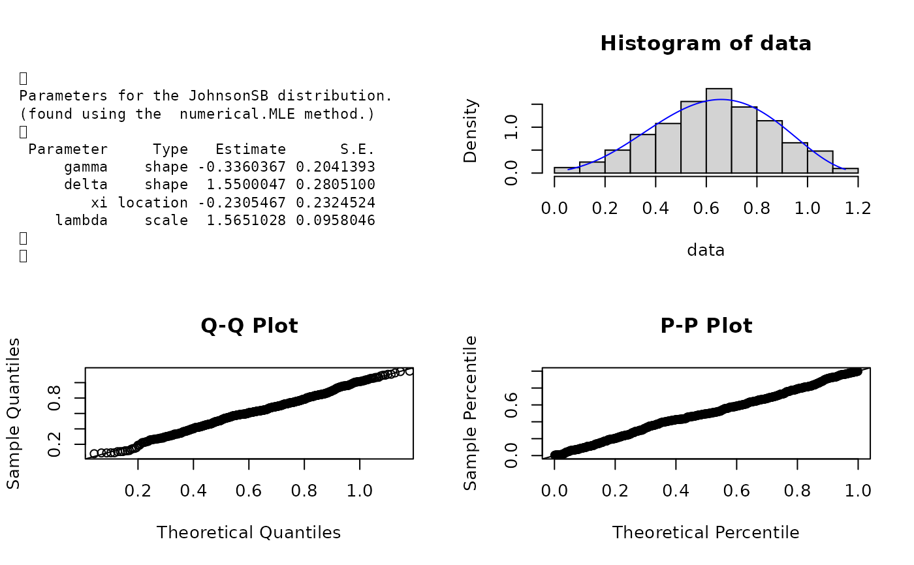
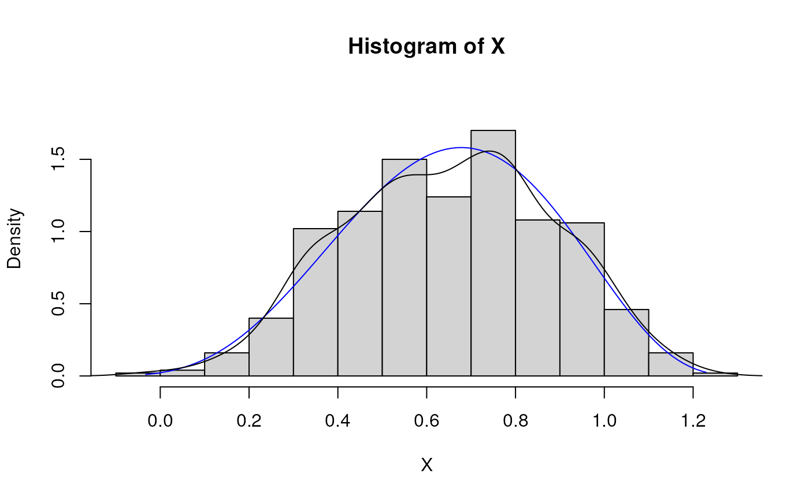

Density, distribution, quantile, random number generation, and parameter estimation functions for the Johnson SB (bounded support) distribution. Parameter estimation can be based on a weighted or unweighted i.i.d. sample and can be performed numerically.
dJohnsonSB(
x,
gamma = -0.5,
delta = 2,
xi = -0.5,
lambda = 2,
params = list(gamma = -0.5, delta = 2, xi = -0.5, lambda = 2),
...
)
dJohnsonSB_ab(
x,
gamma = -0.5,
delta = 2,
a = -0.5,
b = 1.5,
params = list(gamma = -0.5, delta = 2, a = -0.5, b = 1.5),
...
)
pJohnsonSB(
q,
gamma = -0.5,
delta = 2,
xi = -0.5,
lambda = 2,
params = list(gamma = -0.5, delta = 2, xi = -0.5, lambda = 2),
...
)
qJohnsonSB(
p,
gamma = -0.5,
delta = 2,
xi = -0.5,
lambda = 2,
params = list(gamma = -0.5, delta = 2, xi = -0.5, lambda = 2),
...
)
rJohnsonSB(
n,
gamma = -0.5,
delta = 2,
xi = -0.5,
lambda = 2,
params = list(gamma = -0.5, delta = 2, xi = -0.5, lambda = 2),
...
)
eJohnsonSB(X, w, method = "numerical.MLE", ...)
lJohnsonSB(
X,
w,
gamma = -0.5,
delta = 2,
xi = -0.5,
lambda = 2,
params = list(gamma = -0.5, delta = 2, xi = -0.5, lambda = 2),
logL = TRUE,
...
)A vector of quantiles.
Shape parameters.
Location-scale parameters.
A list that includes all named parameters.
Additional parameters.
A vector of probabilities.
Number of observations.
Sample observations.
An optional vector of sample weights.
Parameter estimation method.
logical, it is assumed that the log-likelihood is desired. Set to FALSE if the likelihood is wanted.
dJohnsonSB gives the density, pJohnsonSB the distribution function, qJohnsonSB gives quantile function, rJohnsonSB generates random deviates, and eJohnsonSB estimate the parameters. lJohnsonSB provides the log-likelihood function. The dJohnsonSB_ab provides an alternative parameterisation of the JohnsonSB distribution.
The Johnson system of distributions consists of families of distributions that, through specified transformations, can be
reduced to the standard normal random variable. It provides a very flexible system for describing statistical distributions
and is defined by
$$z = \gamma + \delta f(Y)$$
with \(Y = (X-xi)/lambda\). The Johnson SB distribution arises when \(f(Y) = ln[Y/(1-Y)]\), where \(0 < Y < 1\).
This is the bounded Johnson family since the range of Y is \((0,1)\), Karian & Dudewicz (2011).
The dJohnsonSB(), pJohnsonSB(), qJohnsonSB(),and rJohnsonSB() functions serve as wrappers of the
dJohnson, pJohnson, qJohnson, and
rJohnson functions in the SuppDists package. They allow for the parameters to be declared not only as
individual numerical values, but also as a list so parameter estimation can be carried out.
The JohnsonSB distribution has probability density function
$$p_X(x) = \frac{\delta lambda}{\sqrt{2\pi}(x-xi)(1- x + xi)}exp[-0.5(\gamma + \delta ln((x-xi)/(1-x+xi)))^2].$$
Johnson, N. L., Kotz, S. and Balakrishnan, N. (1994) Continuous Univariate Distributions,
volume 1, chapter 12, Wiley, New York.
Kotz, S. and van Dorp, J. R. (2004). Beyond Beta: Other Continuous
Families of Distributions with Bounded Support and Applications. Appendix B.
World Scientific: Singapore.
Z. A. Karian and E. J. Dudewicz (2011) Handbook of Fitting Statistical Distributions with R, Chapman & Hall.
ExtDist for other standard distributions.
# Parameter estimation for a distribution with known shape parameters
X <- rJohnsonSB(n=500, gamma=-0.5, delta=2, xi=-0.5, lambda=2)
est.par <- eJohnsonSB(X); est.par
#>
#> Parameters for the JohnsonSB distribution.
#> (found using the numerical.MLE method.)
#>
#> Parameter Type Estimate S.E.
#> gamma shape -0.3360367 0.2041393
#> delta shape 1.5500047 0.2805100
#> xi location -0.2305467 0.2324524
#> lambda scale 1.5651028 0.0958046
#>
#>
plot(est.par)

# Fitted density curve and histogram
den.x <- seq(min(X),max(X),length=100)
den.y <- dJohnsonSB(den.x,params = est.par)
hist(X, breaks=10, probability=TRUE, ylim = c(0,1.2*max(den.y)))
lines(den.x, den.y, col="blue")
lines(density(X))

# Extracting location, scale and shape parameters
est.par[attributes(est.par)$par.type=="location"]
#> $xi
#> [1] -0.2305467
#>
est.par[attributes(est.par)$par.type=="scale"]
#> $lambda
#> [1] 1.565103
#>
est.par[attributes(est.par)$par.type=="shape"]
#> $gamma
#> [1] -0.3360367
#>
#> $delta
#> [1] 1.550005
#>
# Parameter Estimation for a distribution with unknown shape parameters
# Example from Karian, Z.A and Dudewicz, E.J. (2011) p.647.
# Original source of brain scan data Dudewich, E.J et.al (1989).
# Parameter estimates as given by Karian & Dudewicz using moments are:
# gamma =-0.2081, delta=0.9167, xi = 95.1280 and lambda = 21.4607 with log-likelihood = -67.03579
brain <- c(108.7, 107.0, 110.3, 110.0, 113.6, 99.2, 109.8, 104.5, 108.1, 107.2, 112.0, 115.5, 108.4,
107.4, 113.4, 101.2, 98.4, 100.9, 100.0, 107.1, 108.7, 102.5, 103.3)
est.par <- eJohnsonSB(brain); est.par
#>
#> Parameters for the JohnsonSB distribution.
#> (found using the numerical.MLE method.)
#>
#> Parameter Type Estimate
#> gamma shape 0.0491309
#> delta shape 0.6547437
#> xi location 97.9208050
#> lambda scale 18.0843462
#>
#>
# Estimates calculated by eJohnsonSB differ from those given by Karian & Dudewicz (2011).
# However, eJohnsonSB's parameter estimates appear to be an improvement, due to a larger
# log-likelihood of -66.35496 (as given by lJohnsonSB below).
# log-likelihood function
lJohnsonSB(brain, param = est.par)
#> [1] -66.35496